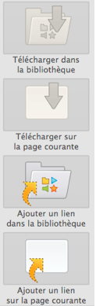
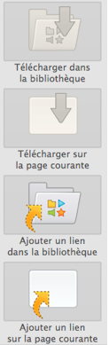
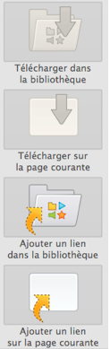

Lo strumento "Cattura contenuto Web" si trova nella barra degli strumenti in modalità Web integrato. Permette di scaricare una pagina intera o dei media (suoni, video, animazioni flash)
A seconda dei media e della loro disponibilità sarà possibile:
- scaricare nella biblioteca (poi utilizzabile anche senza connessione)
- scaricare nella pagina corrente (utilizzabile anche senza connessione)
- aggiungere alla biblioteca il link dell'oggetto (sarà necessaria una connessione web)
- aggiungere alla pagina attuale il link dell'oggetto (sarà necessaria una connessione web).
N.B: in funzione della configurazione dei siti non sarà sempre possibile scegliere tutte e quattro le possibilità (alcune di esse saranno in questo caso "colorate in grigio", e ciò significa che non sono disponibili).
aggiungere una freccia sull'icona utilizzata
